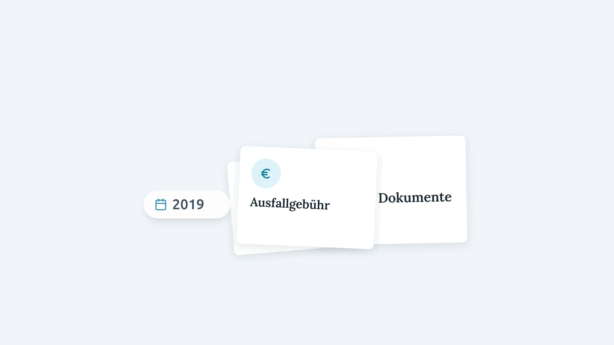
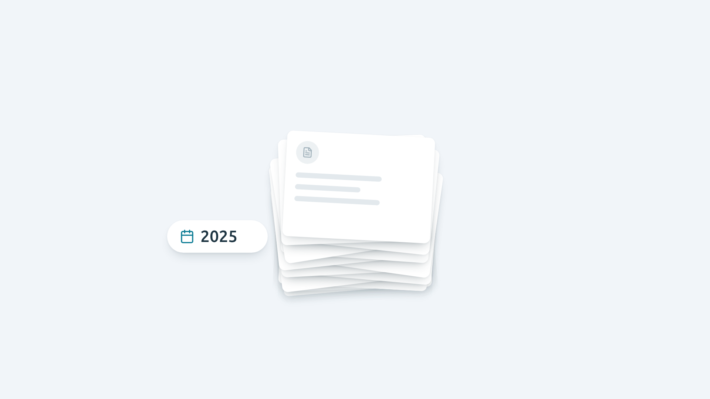
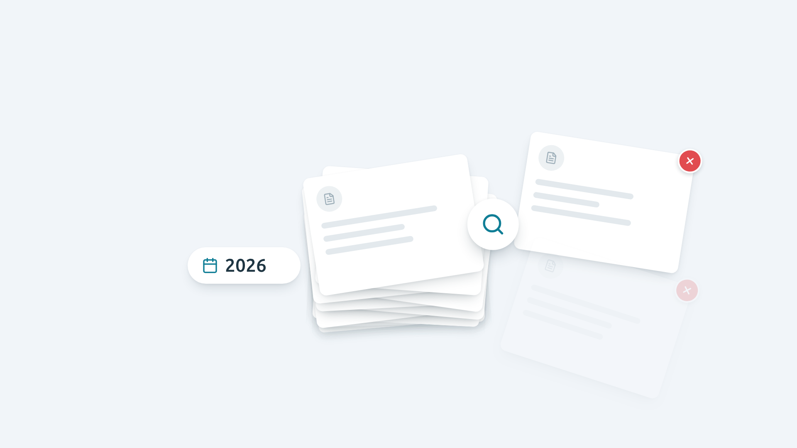

Storyboard · Teil 1, neues Ende
Ab „müssen jahrelang aufbewahrt werden“: Nach Jahren das richtige Dokument zu finden ist mühsam.

01: Alles auf einen Stapel
17,2 bis 17,8 s
Direkt aus deinem Bild bei 17,2 s: Die drei Karten Behandlungsvertrag, Ausfallgebühr und Andere Dokumente schrumpfen und landen übereinander.
„… müssen jahrelang …“

02: Jahre vergehen
17,6 bis 19,0 s
Links läuft die Jahreszahl von 2019 bis 2026. Immer mehr Blätter fallen auf den Stapel und begraben die drei Karten.
„… aufbewahrt werden …“

03: Die mühsame Suche
19,1 bis 20,4 s
Eine Lupe sucht im Stapel. Blatt für Blatt wird herausgezogen, jedes ist das falsche (rotes ✕). Die Suche läuft noch, als der Clip endet.
„… und griffbereit sein.“